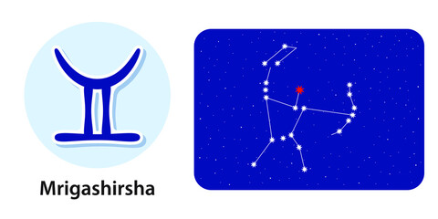

Nakshatra Mrigashira
Mrigashira Nakshatra
Characteristics male
Male belonging to this nakshatra is the kind to doubt every action, and that too is for a legitimate reason as he had previously been cheated on by people close to him. Trust is something he does not do very easily and that is for his own good. Although, even if he has been conned by the people around him, he does not directly cut them off from his life but rather acts nice but wary around them. He is someone who is always invested in a conversation and is paying attention to every word that is being spoken and is expecting the same from others. Mrigashira male doesn’t like to be around people who are judgemental or people he finds to be dishonest. However, males of this nakshatra may not be as truthful to themselves as they think they are, as they are someone who is different from the person they project themselves to be to the world.Profession male
Mrigashira males give very good advice when it comes to financial matters but somehow fail to follow the same - the reason why they might usually find themselves in a situation of crisis. They are usually very well educated and will do good in the field of business. His business will bloom during the age of 32 and he will find himself in a financial place he is satisfied with between the age of 33 to 50, full of energy.Compatibility male
Although there will be immense love between him and his spouse, there will always be animosity in the relationship due to petty reasons and differences in opinion. The reason for most of the conflicts between him and his wife will be because one or the other has a higher profession, which will cause an inferiority complex among them.Health male
Male of this nakshatra might have to go through some medical ailment during his childhood such as frequent constipation leading to a digestive disorder, cuts and injuries along with chronic shoulder or collarbone pain.Characteristics female
Females of Mrigashira Nakshatra are not someone to be trifled with since they tend to have a sharp tongue and love to speak their mind. During an argument, they must be careful and watch what they are saying as any mishap or curse word may cause serious damage to the other person. They are smart and witty and can be a little selfish on some occasions. They love to do social work and are very fond of fine arts. In the future, one might find them settled with loving children and a devoted husband with wealth surrounding them as they are indeed very fond of money and wealth.Profession female
Mrigashira females are usually intelligent but unfortunately, they are not the ones who are very keen on having a good education. But their lack of interest in studies may lead to them repeating a class multiple times. Although, there might be a change in interest in them when Jupiter is well aligned with the Magha constellation, which may lead to them doing their best in education as well as profession.Compatibility female
The female of Mrigashira Nakshatra will be found busy with various household chores even after long into her marriage. Due to their wild nature, they might end up having a few love affairs during the early period of her marriage but they will soon redeem her mistakes and have a loving marriage later on.Health female
Health is a very serious thing for females of Mrigashira Nakshatra as they may have to suffer from some serious health issues such as goitre, STDs, menstrual problems, chronic body pain, and many more. So they will have to take special care when it comes to their health.Mrigashira Nakshatra Padas
1. Pada 1st: The pada falls in the Leo Navamsa and is ruled by the Sun. People falling in this pada are very artistic and have a very good imagination.
2. Pada 2nd: The Padas falls in Virgo navamsa and is dominated by Mercury. The people born in this pada have very stable mental health with strong will and compassion. They are very good communicators and can keep a person engaged.
3. Pada 3rd: The pada falls in the Libra Navamsa and is ruled by Venus. People born in this pada are materialistic and will care about increasing their wealth more than other things in life.
4. Pada 4th: The pada falls in the Scorpio navamsa and is dominated by Mars. People of this pada love to engage in arguments and love to create difficult situations in other people’s lives.